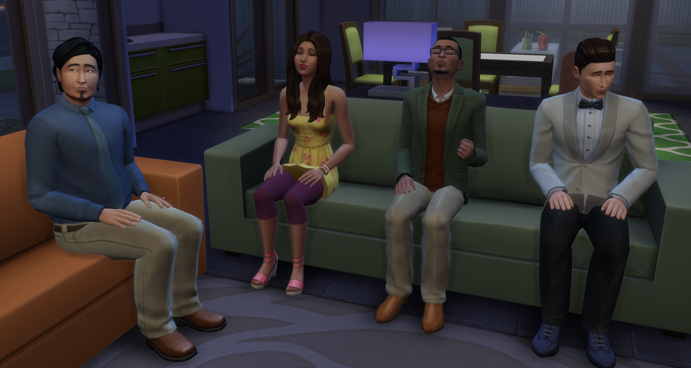
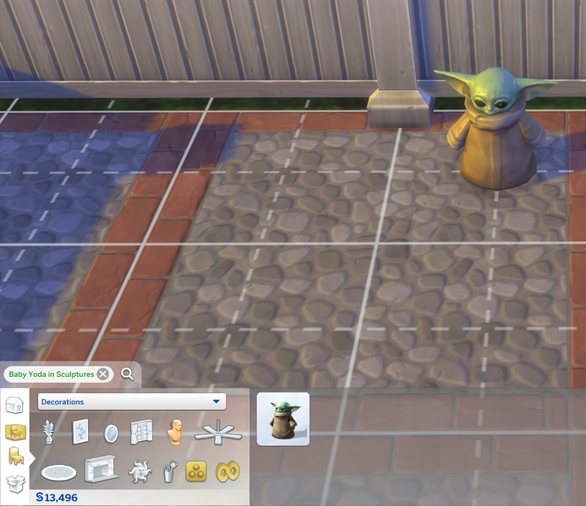

Stangerville
The Sims 4 Game Pack Stangerville is a game pack that is a lot like the Netflix hit show Stranger Things. Many of the things in the game pack reference the show and some of the items even look very similar to what is in the show.
Families
One of the families in the world is named the Roomies. When you look at them you will notice that they look very familiar. Once you look into it you come to find out the Sims are perfect copies of the cast of New Girl.
Books
Many of the books in the game are also references to real books with just a little spin in the name like one book called “Dusk Glow” it is a reference for The Twilight Saga. Another is “Toy Tales” which is a reference to Toy Story. There are many other books that are referencing real books.
New Sim
When a baby is born there is a dialog box that pops up and says “life, the universe and everything waits”, which is referencing Douglas Adams’ Hitchhiker’s Guide to the Galaxy series.
Baby Yoda
One of the ones I really like is that there is an item in the shop that you can get called “The Child Statue” when you look at this item you can see that it is Baby Yoda or Grogu from The Mandalorian.
